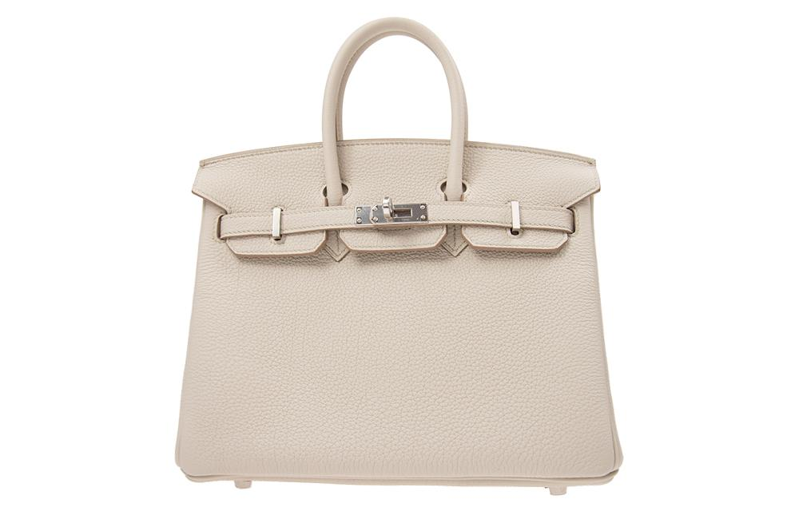

Мода и роскошь
Коллекция Hermès, сумки Birkin, винтажные находки и дорогие покупки.
EXCLUSIVE CONVERSATION · 2026
Игорь Синяк в большом интервью Ксении Собчак: роскошь, популярность, прошлое и новая жизнь.

ABOUT THE INTERVIEW
31 мая 2026 года на YouTube-канале «Осторожно: Собчак» вышел большой выпуск с участием блогера Игоря Синяка.
Интервью было записано в Париже. Ксения Собчак вместе с героем выпуска обсуждала его известность, отношение к роскоши, коллекционирование сумок, прошлую деятельность в интернете и перемены в его публичном образе.
Разговор затронул не только красивую сторону жизни блогера. В выпуске также обсуждались конфликты, критика, ограбление квартиры и последствия популярности.
02 — MAIN TOPICS
Выпуск состоит из нескольких тематических частей. Каждая раскрывает отдельную сторону жизни Игоря.
Коллекция Hermès, сумки Birkin, винтажные находки и дорогие покупки.
Разговор об Украине, маме, Воркуте и семейных воспоминаниях.
Происшествие в Париже, пропавшие вещи и расследование со слов блогера.
История «Вся правда шоу», конфликты с другими блогерами и прошлое.
Музыкальные проекты, выступления и творческая деятельность.
Париж, жизнь за пределами России, новый блог и изменение контента.

03 — FASHION & HERMÈS
Одна из центральных тем интервью — увлечение Игоря Синяка люксовыми аксессуарами. Особое внимание уделяется французскому модному дому Hermès и знаменитым сумкам Birkin.
Во время выпуска герои посещают блошиный рынок Saint-Ouen в Париже. Там Игорь рассматривает винтажные изделия и торгуется за сумку Birkin.
В обзоре интервью Doberman.media сообщалось, что во время этой поездки он приобрёл винтажную Birkin за 11 500 евро.
Также обсуждаются стоимость коллекции, частота покупок и эмоциональная сторона увлечения дорогими вещами.
04 — THE ROBBERY
Значительная часть беседы посвящена ограблению квартиры Игоря в Париже. Блогер рассказывает о произошедшем, пропавших сумках и украшениях, а также о ходе расследования.
В интервью он называет сумму ущерба около 600 тысяч евро. Отдельно обсуждается вопрос о поиске предполагаемых исполнителей.
Ведущая также посещает квартиру Игоря, где герои выпуска обсуждают последствия случившегося.
ПОДРОБНЕЕ ОБ ОГРАБЛЕНИИ ↗
05 — THE PAST
Ещё одна большая часть интервью посвящена прошлому Игоря в интернете. Ведущая и блогер вспоминают период, когда он был связан с пабликом «Вся правда шоу», известным также как ВПШ.
Обсуждаются история проекта, его популярность, отношения с другими блогерами и конфликты, которые сопровождали деятельность сообщества.
Также затрагивается вопрос доходов проекта в период его наибольшей популярности.
От обсуждения прежнего интернет-образа разговор постепенно переходит к тому, каким Игорь хочет видеть свой блог сегодня.

06 — A NEW CHAPTER
В интервью Игорь рассказывает о переменах в своём контенте и публичном образе. Он обсуждает переход от прежнего формата к более личному и лайфстайл-направлению.
Отдельно затрагивается жизнь во Франции, переезд из России и то, как изменились его повседневность и творческие планы.
В выпуске также присутствуют разговоры о музыке, выступлениях и дальнейших проектах.
08 — WATCH THE FULL EPISODE
Полная беседа опубликована на официальном YouTube-канале «Осторожно: Собчак».
Большое интервью · Париж · 2026
СМОТРЕТЬ НА YOUTUBE ↗09 — FINAL THOUGHTS
Интервью показывает разные стороны публичной жизни Игоря Синяка. За темами моды, дорогих сумок и красивых интерьеров следуют разговоры о прошлом, конфликтах, критике и изменении собственного образа.
Выпуск объединяет историю блогинга, личные воспоминания, обсуждение коллекционирования и попытку разобраться в том, как меняется человек, находящийся под постоянным вниманием аудитории.
SOURCES